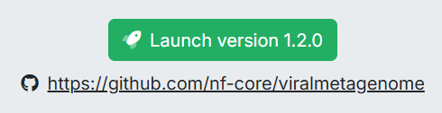
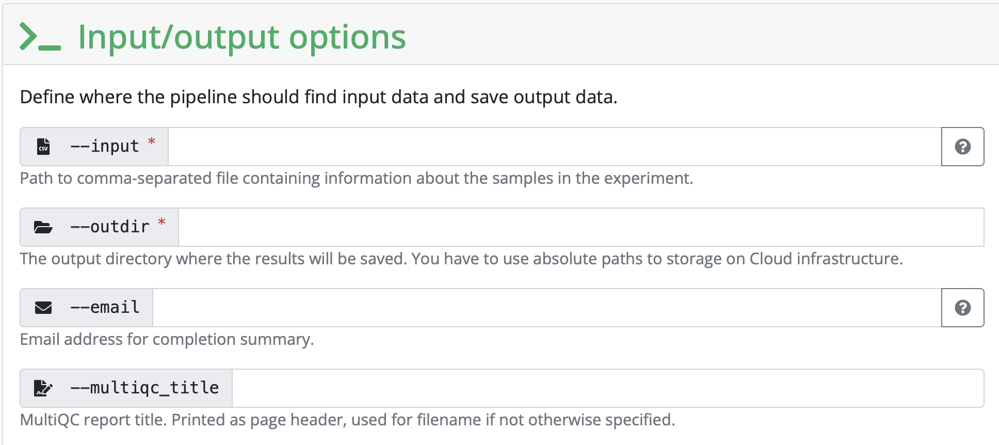
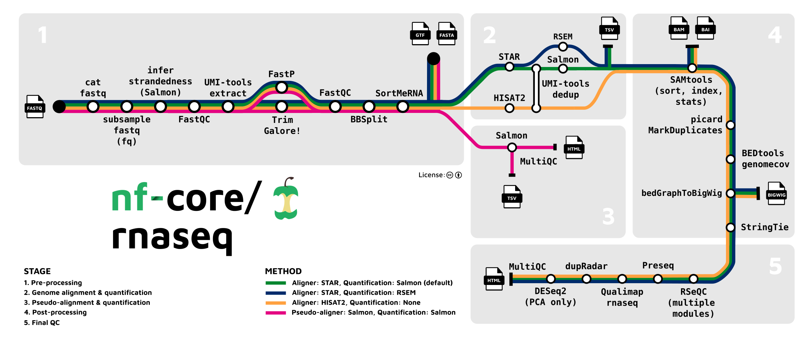

Most bioinformaticians don’t do the hard work of making their own pipelines from scratch. Instead, they use some flagship pipelines that have been developed by the nf-core community! There are 157 pipelines available.
Volunteers develop nextflow pipelines around a variety of bioinformatic data. All nf-core pipelines are open source and the source code is available on github.
Please be aware that nf-core pipelines are developed and maintained (or not maintained) by the community. You cannot copy paste the pipelines on your own data, instead you should use it as a tool you need to understand. The responsibility for the end results is still yours, so you need to see if your data is suited for the analysis!
Mind you, if your data is of bad quality it doesn’t matter if the pipeline fits. Please use QC on your data before using the pipeline!
How do I know how to use the Pipelines
The nf-core community has developed aids for you to understand their pipelines:
- Training material for all user classes
- Best practices for documentation
- Templates for development
- Good documentation following
nf-coreguidelines nf-core launchercan be used to check your input, and automatically generate commands and configuration files
What information is contained in each nf-core section?
Under the Usage tab, you will find extensive information that describes the pipeline, including input information, the samplesheet.csv.
Under the Parameters tab, you will find which parameters can be added to the pipeline and which parameters are necessary, e.g --input or --email
Under the Output tab, you will find the expected output produced by the pipeline. This is useful for output interpretation of what the pipeline produces.
How to start running a pipeline from nf-core
1. Setup your pixi environment with both nextflowand nf-core with the following commands:
pixi init nf_rnaseq_test -c conda-forge -c bioconda #Makes a new project directory with a pixi environment containing conda-forge and bioconda
cd name_nextflow #Enter the project directory
pixi add nextflow nf-core #Adds nextflow and nf-core
screen -S nf_core_training #Opens a screen to apply our run to
pixi run nextflow
pixi run nf-core #Run both
pixi run nextflow run hello #Test the pipeline called "hello"2. Configure your profile
There are two ways to configure your profile:
- Manually create a
server.configfile (exchange “server” with the name of the server, e.g. hpc2n) - Find the server profile you are using in nf-core configs, then follow the instructions described
A server.config file should look something like this:
# Config profile for HPC2N
params {
config_profile_description = 'Cluster profile for HPC2N'
config_profile_contact = 'Lina Andersson'
config_profile_url = 'https://www.hpc2n.umu.se/'
project = null #Fill in the project name of our project (can be found in SUPR NAISS), e.g. 'hpc2ncourses2026-016' with single lines
clusterOptions = null
max_memory = 128.GB
max_cpus = 28
max_time = 168.h
email = 'lina.karlsen.andersson@gu.se' #Fill in the email of the person who recieves updates on the run
}
singularity {
enabled = true #Decides that containers can be used in this process
}
process {
executor = 'slurm' #Informs which executor used for the process
clusterOptions = { "-A $params.project ${params.clusterOptions ?: ''}" }
}3. Link the data to your directory
In order for nf-core and nextflow to find your data, you need to add them to the directory which contains all information for the pipeline to run. You can either: - Add your data into a subdirectory - Link your data from another directory into the working directory, using this command:
ln -s absolute_path_to_data/*fastq.gz .Don’t forget the . in the end!
4. Use nf-core launcher to build a JSON file
Here comes the hardest part, but fret not it’s simple when you resolve all issues once, which I will give notes on!
In the pipeline chosen from nf-core you can use the launcher. It looks like this at the top of a chosen pipeline webpage:

When pressed you enter a page where you need to fill in a form with information that will all together build a JSON file: - --name is only necessary to fill in once you run your process more than the first time - --profile we can fill in if nf-core has the config/profile server we are using - --work.dir is automatically ./work, which doesn’t need to change unless you want another name the directory which will record the work processed during your pipeline run - --resume should be filled in as “Yes” just in case the run is cancelled somehow and you want to resume the run

--inputdefines the the path to the files used to run the pipeline on (your data), these files have to be formatted into a.csvfile, follow instructions given for this in the launcher for this. The.csvfile has to be specified in the end as well.--outdirspecifies the path to the directory in which your output will be generated, make a new directory for this--emailspecifies the email adress which will recieve updates on the process--multiqc_titlewe can fill in if we want the multiqc to have a specific title

--genomehere you provide the reference genome, follow instructions on how to download the reference genome files which are necessary and then do not write anything in this field--fastaspecifies the path to the directory in which your fasta file is in (which was downloaded from the reference genome)--gtfspecifies the path to the directory in which your gtf file is in (which was downloaded from the reference genome)

In your .csv file remember to write the name of your sample, BUT write the absolute path to your 1.fastq.gz and 2.fastq.gz files, strandedness should be auto
Everything should be delimited with comma ONLY!
5. Create a JSON file from launcher information
Once everything is filled in, click on Launch and you will be redirected to another page containing the information that is needed to be added into a JSON file.
Create a file in the working directory called nf-params.json and fill it in with the information. We also need to add "save_reference": true and it should look something like this:
{
"input": "\/proj\/nobackup\/repbio26\/lina\/nf_core_rnaseq\/samplesheet.csv",
"outdir": "\/proj\/nobackup\/repbio26\/lina\/nf_core_rnaseq\/output",
"email": "lina.karlsen.andersson@gu.se",
"multiqc_title": "rnaseq_multiqc_report",
"fasta": "\/proj\/nobackup\/repbio26\/lina\/nf_core_rnaseq\/Homo_sapiens.GRCh38.dna_sm.primary_assembly.fa.gz",
"gtf": "\/proj\/nobackup\/repbio26\/lina\/nf_core_rnaseq\/Homo_sapiens.GRCh38.108.gtf.gz",
"save_reference": true
}6. Run the pipeline
The nf-core launcher also gives us the run command, we only need to add two things to make it all work: pixi run at the start, and then -c server.config at the end:
pixi run nextflow run nf-core/rnaseq -r 3.26.0 -resume -params-file nf-params.json -c server.configAll in all, this while pipeline build up takes a bit of time, but works magically once you have figured out what all the ERROR MESSAGES mean and solve the issue. Here are some issues we faced running RNAseq on some data:
After started run, ERROR linked to reference genome popped up: don’t include the ref_genome in your JSON file, the fasta and gtf file is enough
After started run, ERROR happened that had us all confused, we thought it was server-related but was solvable after re-linking the data again by one of us students…
